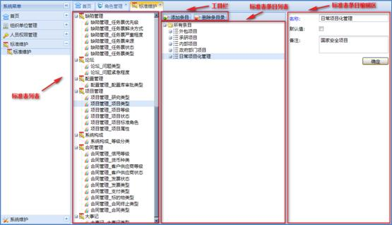
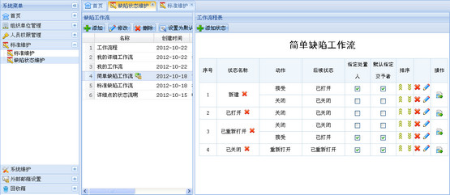

标准表就是系统的一些基础数据，超级用户需要维护标准表的数据，用例如图所示。功能包括：添加标准表信息，修改标准表信息，删除标准表信息，搜索标准表信息和对标准进行调序五个功能。
在系统菜单里选择标准维护，工作区会显示标准维护模块信息。工作区左边显示的是标准表列表，中间显示标准表条目列表，右边显示标准表编辑区，上面显示工具栏，如下图所示：

图 标准维护界面
1、添加条目
在标准表目录中选择一个标准表，通过工具栏的“添加条目”按钮或右键菜单的“添加条目”添加。
2、修改条目
在标准表目录中选择一个标准表，在对应标准表条目目录中选择一条记录，在右侧条目编辑区会显示该记录相关的信息，修改相关信息后单击“确定”按钮完成修改。
3、删除条目
通过工具栏或通过右键菜单的“删除条目”删除。
注意：
如果条目记录图标为加锁样式()，表示该记录不可删除，且右键菜单中没有“删除记录”选项。
在标准表条目目录中拖拽调整条目之间的位置。具体如下：鼠标左键选择一个条目将其拖拽到目标位置，放开鼠标左键完成拖拽。
缺陷状态反映了某一缺陷当前所处的状态。缺陷工作流是缺陷从新建到关闭之间所处理的流程。系统支持用户根据自己的需要自定义缺陷工作流。

图 缺陷状态维护界面
1、添加工作流
在缺陷标准维护-缺陷工作流页面，通过工具栏的“添加”按钮添加工作流，填写工作流名称。
2、添加状态
在工作流程表页面，通过工具栏的“添加”按钮添加所需状态。状态可多选添加。
3、添加动作
添加完状态后，在添加状态的操作栏中，通过“添加动作”按钮添加该状态的后续状态，可以自定义动作名称。
4、设置为默认
添加好一个完整的工作流后，可以设置该工作流为默认工作流。
注意：
添加的工作流应该是一套完整的流程，中间不应出现断层现象。